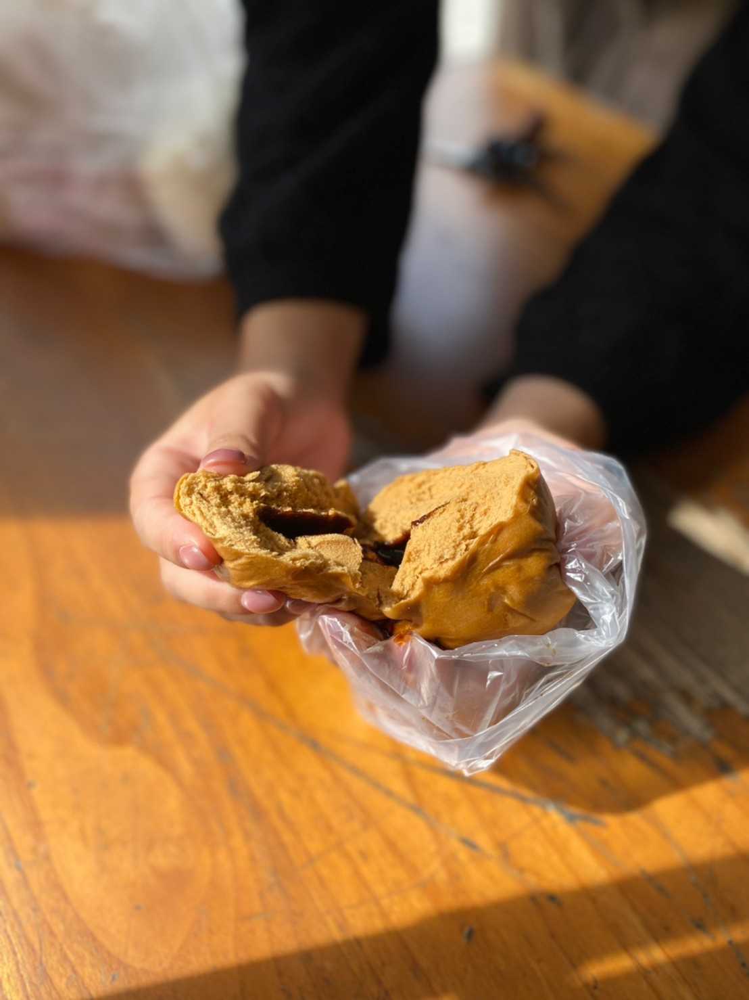
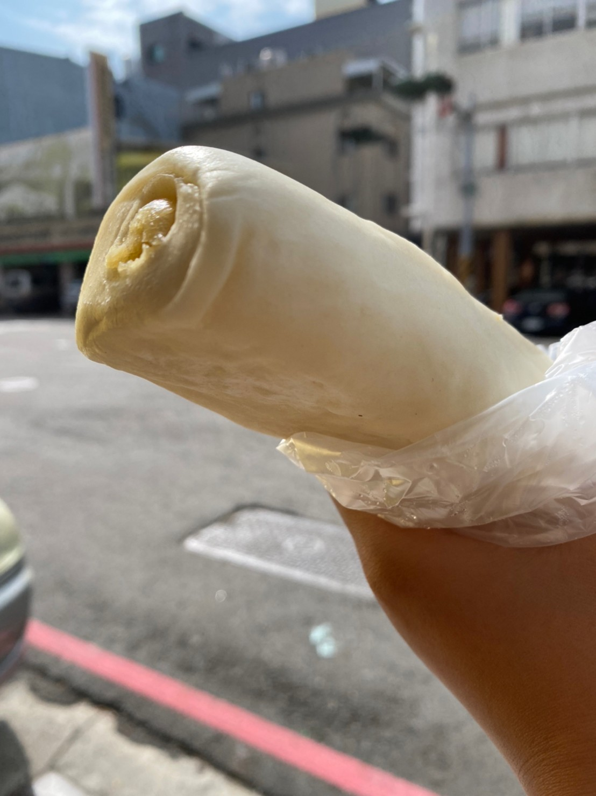
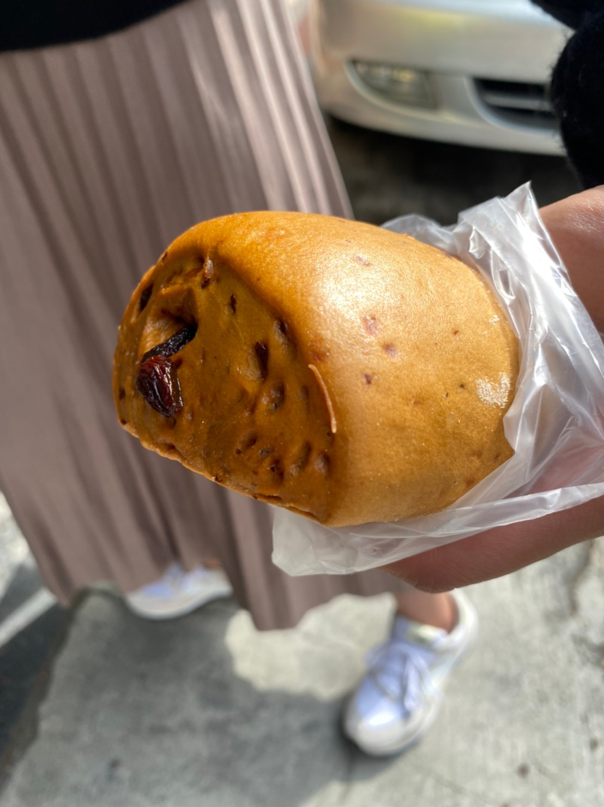
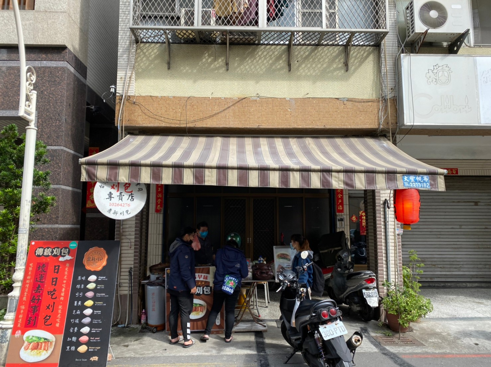
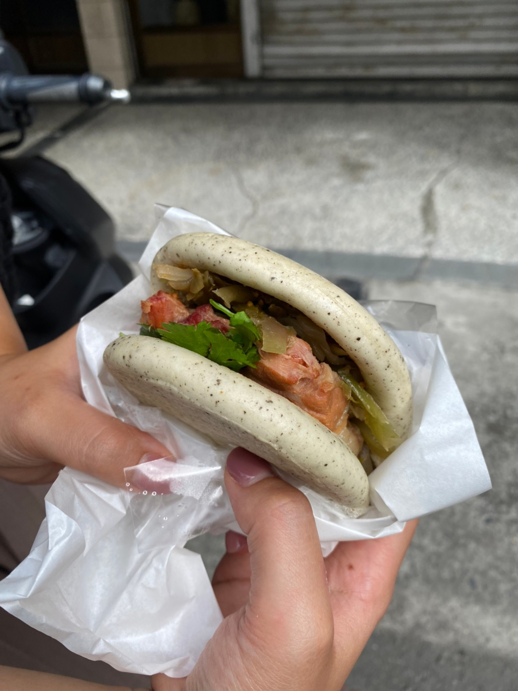
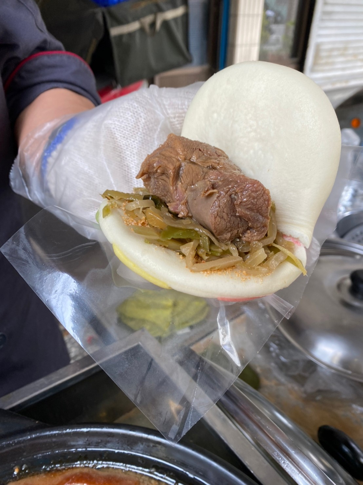
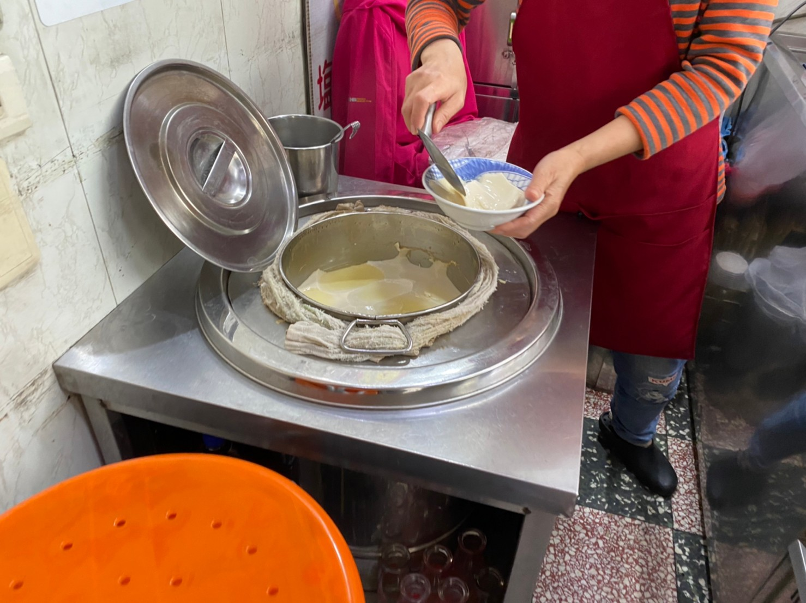
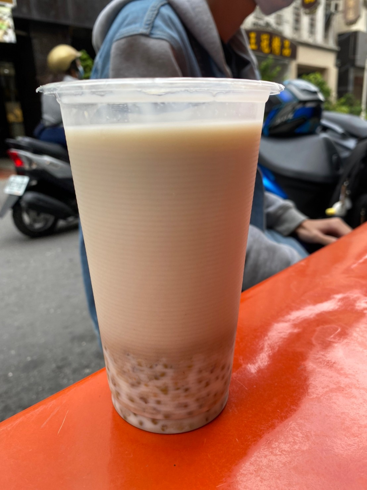
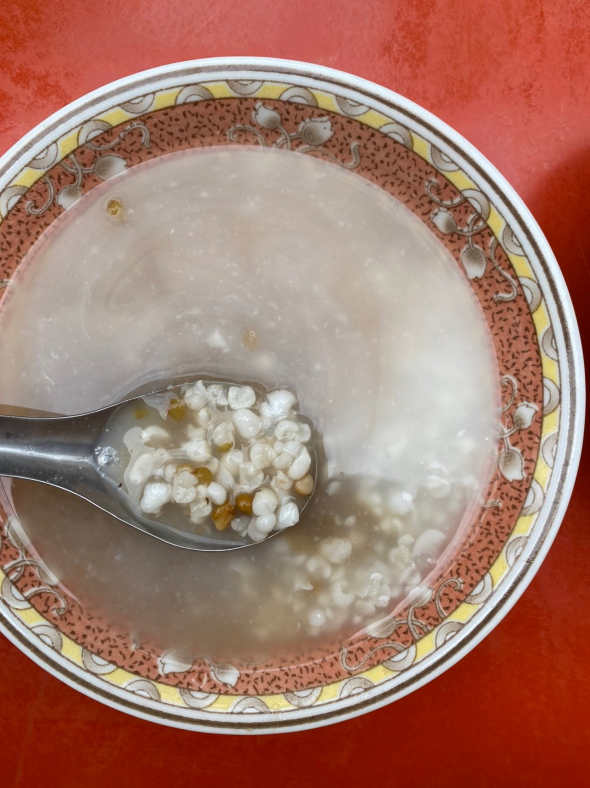
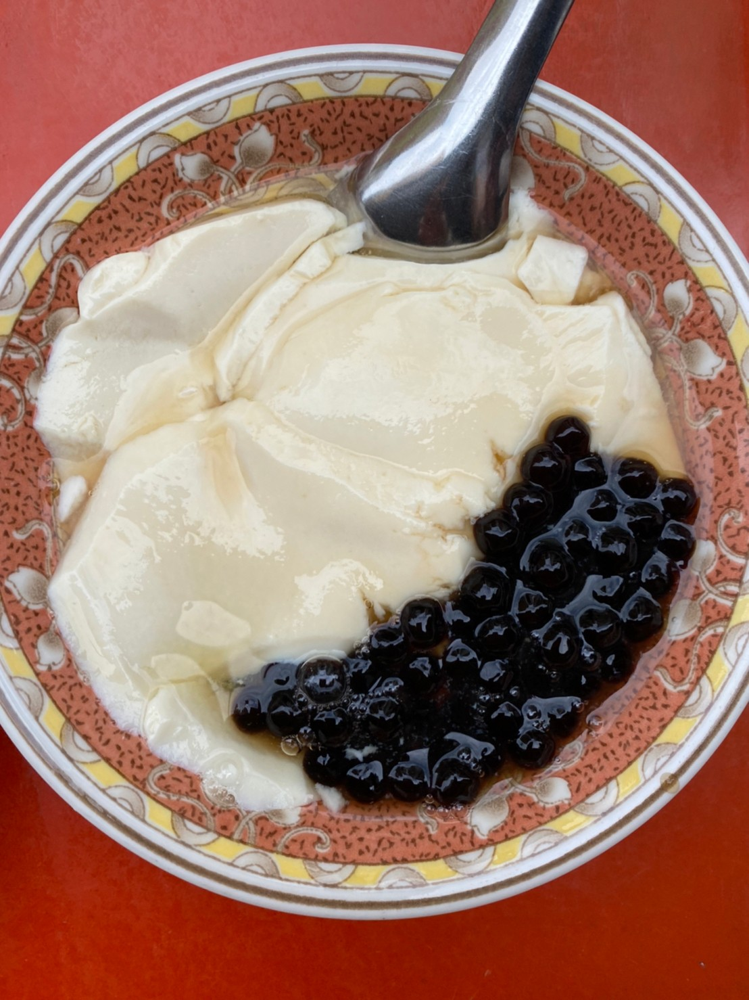

漫步於街道早晨 思索著慢慢耕耘為何物? 瞞不住也猜不透
我想...這就是所謂饅頭"內涵"吧!
30th November 2021

關於「永青饅頭」:
在大家還在與睡神搏鬥的同時，已有一群早起的人們正準備出門為生活努力打拼，
此時，哪怕是多麼不起眼的早餐都將能撫慰人心，更何況是一家富含滿滿用心與熱忱所成立的多年手工饅頭店。
看著伯伯認真的神情與專業的揉麵手勢，而食物也是真材實料，就知道，這裡的饅頭絕對不簡單!
店面的低調樸實也與他多年營造的廣大好評形成強烈對比，
慢工出細活，看似平凡的饅頭裡，包含著大大的學問，也成為街訪鄰居口中的平民巷口早餐好選擇!
(tips:毛巾饅頭建議提前預約(芋頭為限量口味),早點去才有熱騰騰剛出爐的可以購買,
也可選擇冷的回家蒸，整體口感也是鬆軟派)
此時，哪怕是多麼不起眼的早餐都將能撫慰人心，更何況是一家富含滿滿用心與熱忱所成立的多年手工饅頭店。
看著伯伯認真的神情與專業的揉麵手勢，而食物也是真材實料，就知道，這裡的饅頭絕對不簡單!
店面的低調樸實也與他多年營造的廣大好評形成強烈對比，
慢工出細活，看似平凡的饅頭裡，包含著大大的學問，也成為街訪鄰居口中的平民巷口早餐好選擇!
(tips:毛巾饅頭建議提前預約(芋頭為限量口味),早點去才有熱騰騰剛出爐的可以購買,
也可選擇冷的回家蒸，整體口感也是鬆軟派)

爆漿黑糖包
微甜的黑糖麵皮裡，香甜濃厚的黑糖漿成了此饅頭最大的亮點。
熱呼呼的爆汁黑糖餡，也使內心被溫暖給環繞，幸福指數爆棚。
平凡外層與濃郁的內餡，如同一位外表樸素卻富有學問的朋友，
與他交心越久，越能發現他的特別與層次感；
也如同開驚喜包一樣，總是無法猜透裡面的內容物能帶給你多大的驚喜感。
這就是貨真價實的黑糖所散發的魅力吧!
熱呼呼的爆汁黑糖餡，也使內心被溫暖給環繞，幸福指數爆棚。
平凡外層與濃郁的內餡，如同一位外表樸素卻富有學問的朋友，
與他交心越久，越能發現他的特別與層次感；
也如同開驚喜包一樣，總是無法猜透裡面的內容物能帶給你多大的驚喜感。
這就是貨真價實的黑糖所散發的魅力吧!

毛巾饅頭(綠豆沙口味)
是這家饅頭店的最大特色，就是伯伯自己研發的毛巾饅頭，
有紅豆、綠豆及芋泥餡可選擇，
裡面豆沙餡不會死甜，吃多了也不膩口；
它細膩綿密的口感，在嘴中也會瞬間化開，
唯一會留下的，只剩滿腔的甜蜜餘韻。
在內餡添加的方面，伯伯也絕不手軟，
讓你食用每一口白饅頭的同時都能吃到滿滿的內餡，簡單的快樂~
有紅豆、綠豆及芋泥餡可選擇，
裡面豆沙餡不會死甜，吃多了也不膩口；
它細膩綿密的口感，在嘴中也會瞬間化開，
唯一會留下的，只剩滿腔的甜蜜餘韻。
在內餡添加的方面，伯伯也絕不手軟，
讓你食用每一口白饅頭的同時都能吃到滿滿的內餡，簡單的快樂~

黑糖葡萄饅頭
將葡萄乾加在黑糖饅頭裡，使它在被咀嚼的同時，
有了更多層次的口感，營養程度也跟著提升，食用起來也較無負擔，
淡淡的黑糖香再加上葡萄乾的香氣，
不會讓不想吃普通饅頭又想吃健康一點的你覺得單調乏味，
早晨及放學下午茶的無負擔首選!
有了更多層次的口感，營養程度也跟著提升，食用起來也較無負擔，
淡淡的黑糖香再加上葡萄乾的香氣，
不會讓不想吃普通饅頭又想吃健康一點的你覺得單調乏味，
早晨及放學下午茶的無負擔首選!
地點:高雄市鹽埕區大公路
營業時間 : 一 ~ 日 :
60
號 營業時間 : 一 ~ 日 :
7:00-18:00
誰將正在熟睡的你我叫起 難道是那陣陣飄香嗎? 尋尋覓覓 驀然回首
那記刈中的映象浮上眼前...
30th November 2021

關於「鼎新刈包」:
在不起眼的巷弄裡，就是有這麼一家不靠醒目招牌招攬客人的個性美食。
靠得只有老闆熟練的滷製手藝和極具特色的彩色刈包，雖然只在此處經營五年時間，
不過卻是附近鄰居好評不斷的口袋名單、品質保證，總想著為何能把如此平常的傳統美食賣得有聲有色，
難道是有什麼獨家秘辛?!但，實際走訪認為並非如此，食材固然好吃，畢竟是延續多年的紮實手藝，
但真正致勝的關鍵，是那老闆好客的個性及細心為每組客人解說製程的耐心。
美食並非要多麼的聲名大噪或者大排長龍，要吃的其實就是那種人情味吧 ~ 隨興又不失水準
(tips:假日購買才有高機率碰到隱藏版的刈包顏色及限量的部位,也可先行告知肉質的肥瘦比例和想要的刈包顏色)
靠得只有老闆熟練的滷製手藝和極具特色的彩色刈包，雖然只在此處經營五年時間，
不過卻是附近鄰居好評不斷的口袋名單、品質保證，總想著為何能把如此平常的傳統美食賣得有聲有色，
難道是有什麼獨家秘辛?!但，實際走訪認為並非如此，食材固然好吃，畢竟是延續多年的紮實手藝，
但真正致勝的關鍵，是那老闆好客的個性及細心為每組客人解說製程的耐心。
美食並非要多麼的聲名大噪或者大排長龍，要吃的其實就是那種人情味吧 ~ 隨興又不失水準
(tips:假日購買才有高機率碰到隱藏版的刈包顏色及限量的部位,也可先行告知肉質的肥瘦比例和想要的刈包顏色)

精選刈包
鬆軟微甜的刈包皮成為了這道美食最好的襯托，
不要怕不同味道的外皮蓋住了爌肉的香氣，
因為刈包皮本身沒什麼味道，但如果想要讓刈包增添額外的風味層次，
就可以選擇黑糖或抹茶口味。
茶香的尾韻及黑糖的香氣，烘托出此刈包的獨特性，
既沒有搶走主角的風采，又將整體推向另一種美味。
肉質方面可以自由選擇，能吃稍微油花肥肉的你，老闆會大推半肥半瘦，
不但能吃到豬肉紮實的肉質，又能感受油脂到在口中化開的口感...
層層入味、口口滿意。而油脂的香氣也不會讓你感到噁心而心生抗拒，
如同交響樂般，在口中的達到了適當的平衡，不肥不膩，恰如其分
*敢吃香菜的同胞們，加上香菜，好吃等級加倍~刈包完全體組合!
不要怕不同味道的外皮蓋住了爌肉的香氣，
因為刈包皮本身沒什麼味道，但如果想要讓刈包增添額外的風味層次，
就可以選擇黑糖或抹茶口味。
茶香的尾韻及黑糖的香氣，烘托出此刈包的獨特性，
既沒有搶走主角的風采，又將整體推向另一種美味。
肉質方面可以自由選擇，能吃稍微油花肥肉的你，老闆會大推半肥半瘦，
不但能吃到豬肉紮實的肉質，又能感受油脂到在口中化開的口感...
層層入味、口口滿意。而油脂的香氣也不會讓你感到噁心而心生抗拒，
如同交響樂般，在口中的達到了適當的平衡，不肥不膩，恰如其分
*敢吃香菜的同胞們，加上香菜，好吃等級加倍~刈包完全體組合!

膠原蛋白筋肉刈包 (隱藏版)
別以為老闆只賣一般的爌肉刈包而已，殊不知其實還偷留一手，
如果夠幸運的話，能吃到限量版的豬筋瘦肉!
老闆說這個部位在一頭豬上只有少少的兩塊，可遇而不可求!
因為老闆已經提前滷製好並泡在裡面一段時間，
所以別怕整塊瘦肉在咀嚼時會過柴，
富滿膠質的瘦肉，也會如同奶油般塗抹於整個雙唇，
並讓雙唇瞬間覆蓋光澤感，大大的滿足、小小的幸福
如果夠幸運的話，能吃到限量版的豬筋瘦肉!
老闆說這個部位在一頭豬上只有少少的兩塊，可遇而不可求!
因為老闆已經提前滷製好並泡在裡面一段時間，
所以別怕整塊瘦肉在咀嚼時會過柴，
富滿膠質的瘦肉，也會如同奶油般塗抹於整個雙唇，
並讓雙唇瞬間覆蓋光澤感，大大的滿足、小小的幸福
地點:高雄市鹽埕區新樂街
營業時間 : 一 ~ 日 :
114-2
號 營業時間 : 一 ~ 日 :
10:00-17:30
夏日炎炎 秋去冬來 誰將能溫暖你我的心 ;
而最純樸熟悉的味道...亦成為返鄉子弟最深的眷戀
01th December 2021

關於「王家豆花」:
午餐時間的鹽埕街道，湧入了一群忙裡偷閒的上班族、學生們及附近居民到此用餐。
而在享受傳統美食的洗禮之餘，一定"渴"望一個完美的收尾來結束這慵懶的午後時光~
而這時的王家豆花，儼然成為最天然傳統的好選擇，雖然沒有連鎖飲料店的光鮮亮麗與豐富單品，
但他所擁有的卻是連鎖飲料店所欠缺的---最純樸簡單的兒時記憶。
老闆用了快一甲子時間經營，先從一開始的紅豆、綠豆及圓仔類甜品，
到後來去廣西學習近30年的豆花手藝並引用到台灣販賣，
就算歷經了大眾對食品安全的疑慮興起，他依然是十幾年不曾動搖的好味道，品質保證!
而在享受傳統美食的洗禮之餘，一定"渴"望一個完美的收尾來結束這慵懶的午後時光~
而這時的王家豆花，儼然成為最天然傳統的好選擇，雖然沒有連鎖飲料店的光鮮亮麗與豐富單品，
但他所擁有的卻是連鎖飲料店所欠缺的---最純樸簡單的兒時記憶。
老闆用了快一甲子時間經營，先從一開始的紅豆、綠豆及圓仔類甜品，
到後來去廣西學習近30年的豆花手藝並引用到台灣販賣，
就算歷經了大眾對食品安全的疑慮興起，他依然是十幾年不曾動搖的好味道，品質保證!

薏仁+綠豆湯
兩大主角在這個甜品中融合得恰到好處，並不會互相搶奪對方的味道，
也喝得出兩者最單純的清甜，用料也非常實在，
而將近四分之一杯的綠豆薏仁顆粒使你在食用的當下也有一定的飽足感!
至於食材處理的方面也不馬虎，輕輕咀嚼就能輕鬆下嚥，清爽型夏季飲品
也喝得出兩者最單純的清甜，用料也非常實在，
而將近四分之一杯的綠豆薏仁顆粒使你在食用的當下也有一定的飽足感!
至於食材處理的方面也不馬虎，輕輕咀嚼就能輕鬆下嚥，清爽型夏季飲品

薏仁牛奶 / 綠豆牛奶
如果想吃的更有營養，也可以選擇牛奶進行添加，
乳香中帶點薏仁與綠豆的香氣，
喝得出與坊間其他飲料店和便利商店有著極大的差別，
非常自然的味道，不會有一絲化學感，亦不用怕會有什麼化學添加物，
對家長而言，也能很安心的給自己的孩子飲用!
乳香中帶點薏仁與綠豆的香氣，
喝得出與坊間其他飲料店和便利商店有著極大的差別，
非常自然的味道，不會有一絲化學感，亦不用怕會有什麼化學添加物，
對家長而言，也能很安心的給自己的孩子飲用!

珍珠豆花
這家老店最大的亮點，絕對非豆花莫屬了!
從豆花的口感就看得出老闆真正的功夫所在，
綿密細緻又紮實的口感，還有每次放進口中的黃豆香氣...令人難以忘懷，
最重要的是，他也是一道飽足感極強的甜品，
冬天溫暖身心；夏天則透涼沁脾、四季皆宜。
也別怕其他佐料會拉低豆花水平，因為老闆在處理佐料也非常用心，
以珍珠為例，Q彈不爛，咀嚼的同時也會散發一點黑糖香氣，
讓樸素的豆花不再單調，最後再加上老闆自行研發的糖水獨家比例加持，
儼然成了畫龍點睛之筆，賦予了豆花生命與層次
從豆花的口感就看得出老闆真正的功夫所在，
綿密細緻又紮實的口感，還有每次放進口中的黃豆香氣...令人難以忘懷，
最重要的是，他也是一道飽足感極強的甜品，
冬天溫暖身心；夏天則透涼沁脾、四季皆宜。
也別怕其他佐料會拉低豆花水平，因為老闆在處理佐料也非常用心，
以珍珠為例，Q彈不爛，咀嚼的同時也會散發一點黑糖香氣，
讓樸素的豆花不再單調，最後再加上老闆自行研發的糖水獨家比例加持，
儼然成了畫龍點睛之筆，賦予了豆花生命與層次
地點:高雄市鹽埕區新樂街
營業時間 : 一 ~ 五 :
213-6
號 營業時間 : 一 ~ 五 :
11:00-20:30
| 六、日 :
11:00-20:00